1
Multi-view attribution
Rendered normals are compared with each disk’s normal across reconstruction views. Planar regions show low dispersion; corners show high dispersion.
Rasterization-based Path Planning in 2D Gaussian Splatting Map
zzziito.park@gmail.com
Gaussian splatting provides an explicit and efficiently rasterizable scene representation for robot navigation. However, individual Gaussian primitives may not reliably represent obstacles as they are jointly optimized through alpha-composited rendering from a finite set of reconstruction views. We propose 2DGS-Planner, a path planner for ground robots that reads planning-relevant geometry from a 2D Gaussian splatting (2DGS) map through rasterization, rather than treating individual Gaussian primitives as obstacles. During offline roadmap construction, multi-view attribution converts rendered normal dispersion into structural scores for non-ground disks supported by the reconstruction views. These scores guide adaptive node sampling on the ground. Path-aligned orthographic queries validate candidate edges, while cylindrical queries estimate local clearance fields that are cached on the edges. During online planning, graph search initializes a route, and path refinement reuses the cached fields while accounting for the robot’s dimensions and ground constraints. Experiments demonstrate improved roadmap connectivity, more accurate clearance estimation, and higher planning success compared with the tested baselines. These results support rasterization as an effective geometric query interface for planning directly on Gaussian maps.
Paths from each planner for the same start–goal pairs, drawn in the 2DGS map.
SPL 0.956 · 48/50 pass collision check
SPL 0.782 · 40/50 pass collision check
Start–goal pairs 0–9 in each scene
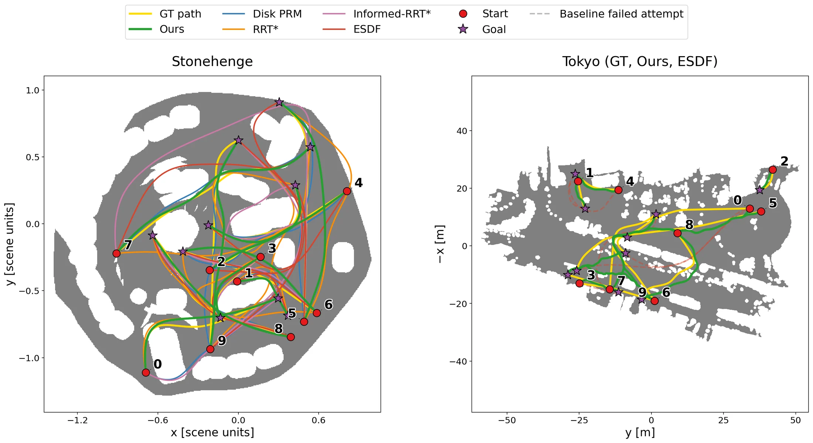
Our full planner (adaptive + refinement). SPL and collision-check counts at εref over 50 start–goal pairs per scene. Full comparison in Results.
We plan a route in the 2DGS map of an indoor room, register the map to a FAST-LIO2 LiDAR map, and track the refined path on a humanoid robot with a pure-pursuit controller.
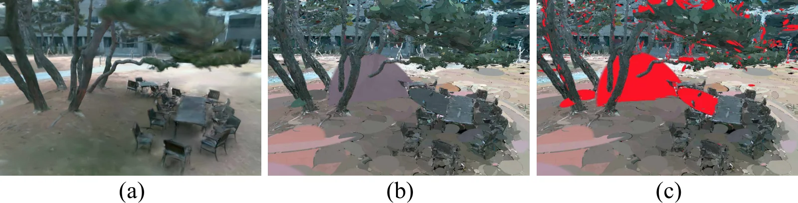
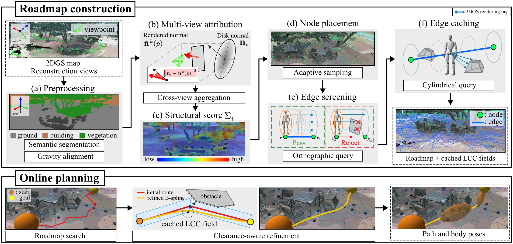
Everything the planner uses is read from rasterized views of the same map.
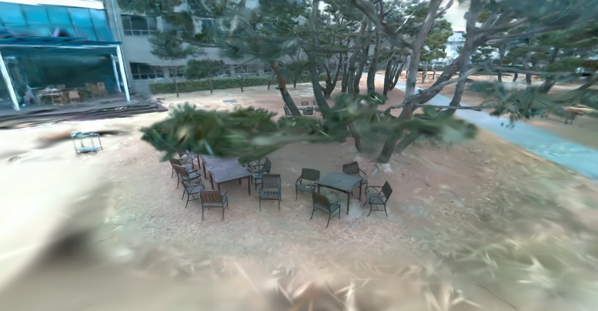
RGB rendering of the reconstructed courtyard.
Offline · Roadmap construction
Rendered normals are compared with each disk’s normal across reconstruction views. Planar regions show low dispersion; corners show high dispersion.
Dispersion aggregated over the views becomes a score for each observation-supported non-ground disk.
Ground nodes are sampled more densely near high-score structure and connected into a roadmap.
A path-aligned orthographic query renders along each candidate edge with the robot’s footprint. Edges whose rays hit a surface are rejected.
A cylindrical query renders the radial distance to surfaces around the edge. It is unrolled into a local clearance field and cached on the edge.
Online · Path planning
The A* route is refined as a B-spline using the cached clearance, the robot’s dimensions, and ground support, then revalidated.
With the same sampling budget, adaptive sampling places more nodes near corners and clutter. Drag the divider to compare.
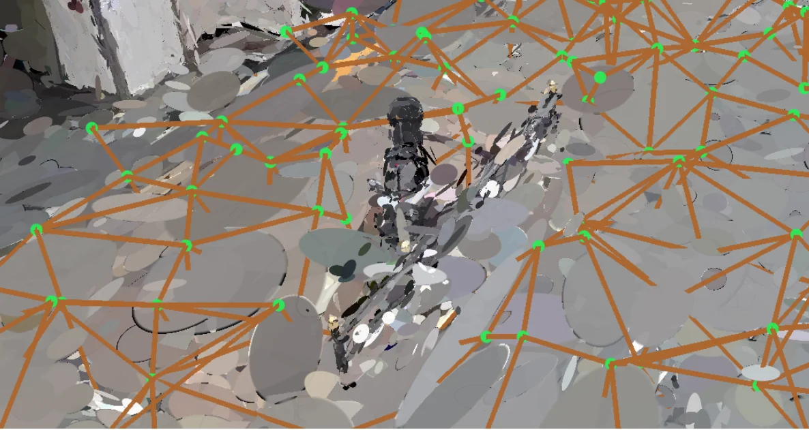
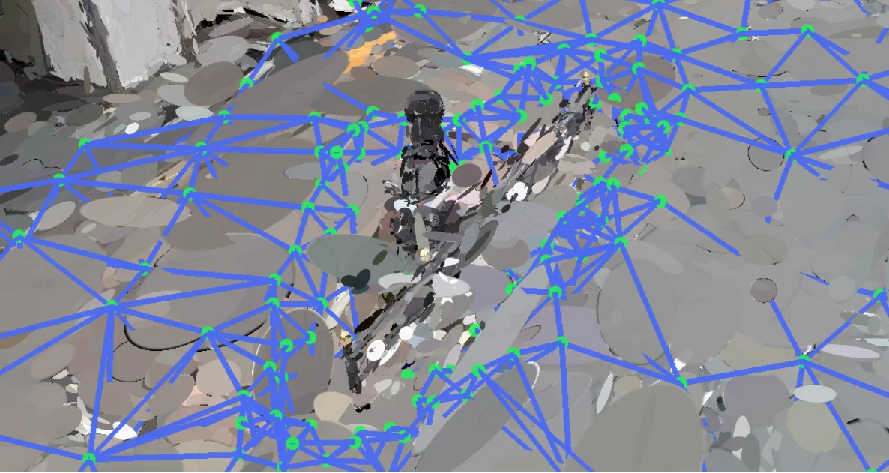
We evaluate 50 start–goal pairs in each of two scenes. All methods use the same 2DGS reconstruction. Stonehenge is synthetic and has an exact reference mesh (r = 0.05 scene units, εref = 0.005). Tokyo is a real-world capture evaluated against an aligned proxy mesh (r = 0.50 m, εref = 0.10 m).
| Method | Stonehenge | Tokyo | ||||
|---|---|---|---|---|---|---|
| Pass (εref) | Pass (ε = 0) | SPL | Pass (εref) | Pass (ε = 0) | SPL | |
| Disk PRM (1k) | 21/50 | 15/50 | 0.335 | 6/50 | 6/50 | 0.091 |
| Disk PRM (10k) | 43/50 | 29/50 | 0.746 | 10/50 | 10/50 | 0.176 |
| Disk PRM (60k) | 45/50 | 27/50 | 0.810 | 10/50 | 9/50 | 0.168 |
| RRT* | 35/50 | 24/50 | 0.663 | 10/50 | 8/50 | 0.180 |
| Informed RRT* | 33/50 | 24/50 | 0.650 | 13/50 | 10/50 | 0.248 |
| ESDF (ground-constr.) | 38/50 | 26/50 | 0.751 | 12/50 | 8/50 | 0.218 |
| Ours (uniform) | 38/50 | 26/50 | 0.752 | 38/50 | 30/50 | 0.694 |
| Ours (uniform) + refinement | 40/50 | 31/50 | 0.781 | 39/50 | 33/50 | 0.717 |
| Ours (adaptive) | 46/50 | 31/50 | 0.917 | 40/50 | 32/50 | 0.765 |
| Ours (adaptive) + refinement | 48/50 | 34/50 | 0.956 | 40/50 | 34/50 | 0.782 |
Table I. Collision pass counts at εref and at ε = 0, and SPL. Higher is better. Best values in bold.
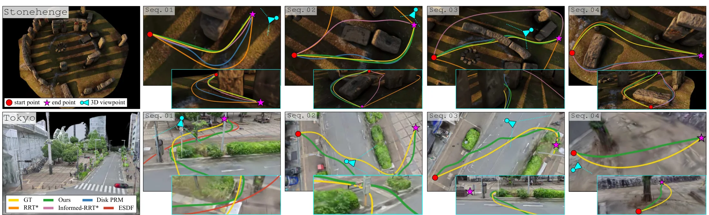
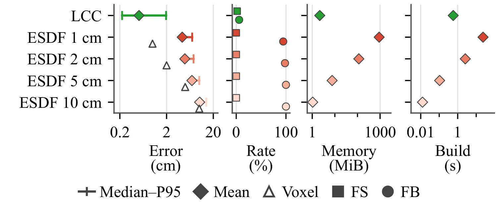
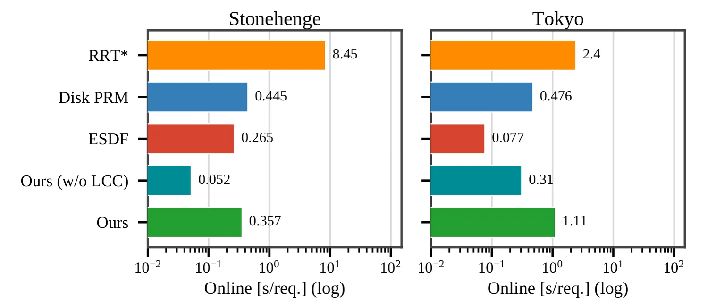
Hardware: RTX 4090, Core i9-10900K, 94 GB RAM. Each edge caches a 64 × 128 clearance field, and refinement uses 12 B-spline control points. Scope: fixed maps, an ellipsoidal robot body, and ground-supported paths.
Footprint queries depend on the robot’s size, so the same start and goal can produce different routes.
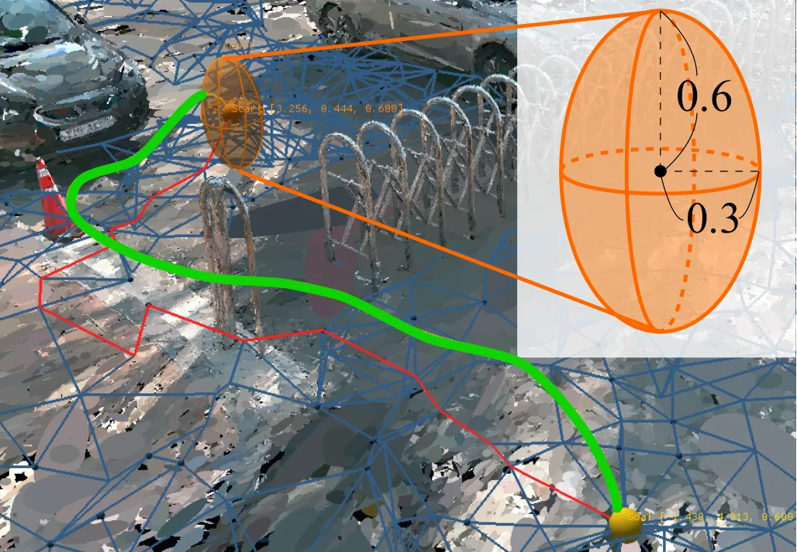
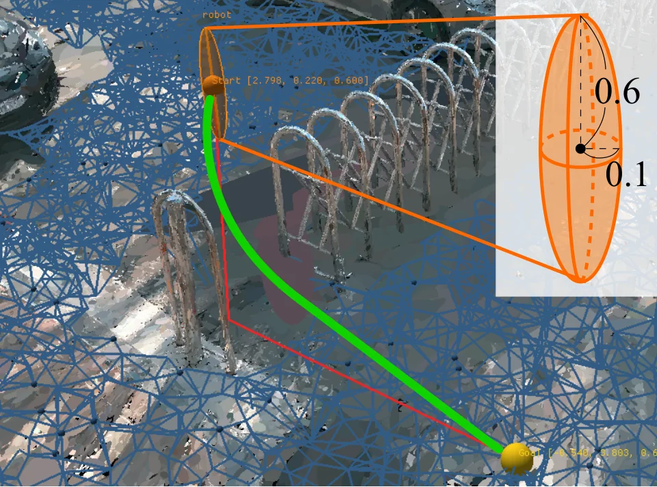
BibTeX will be added once the paper is public.